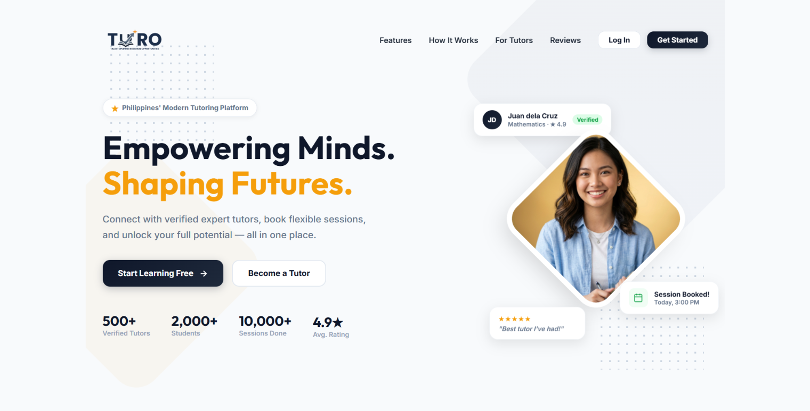
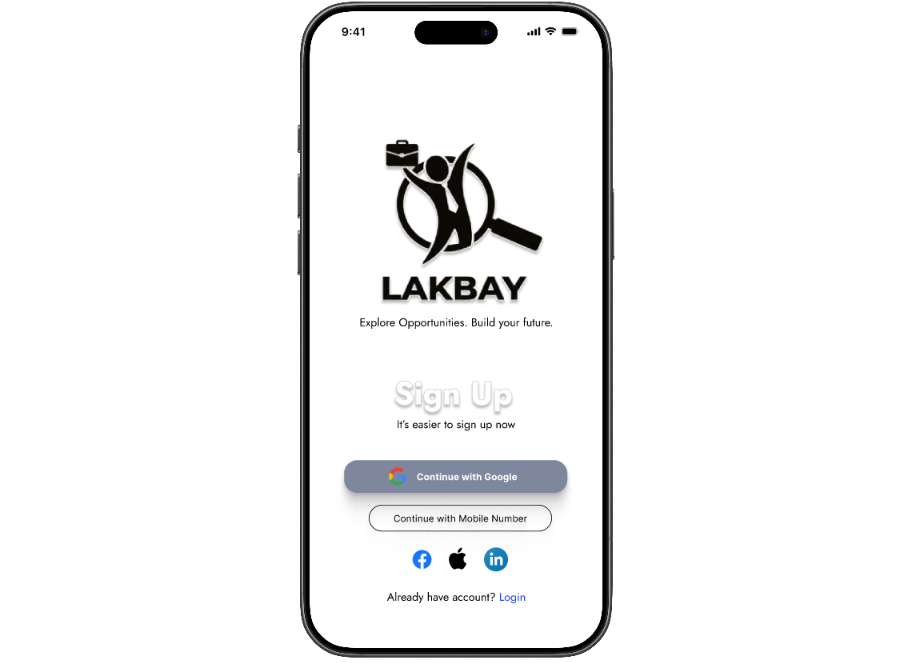
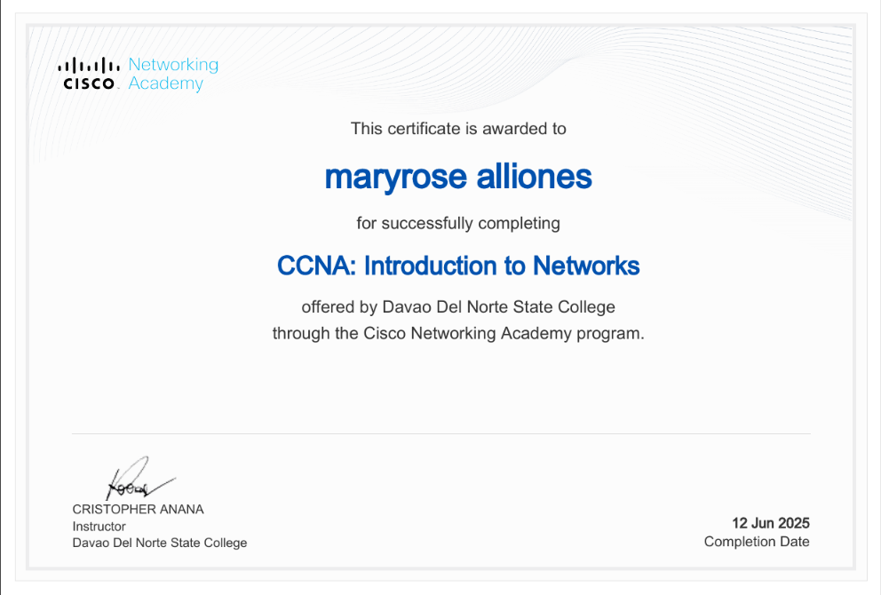
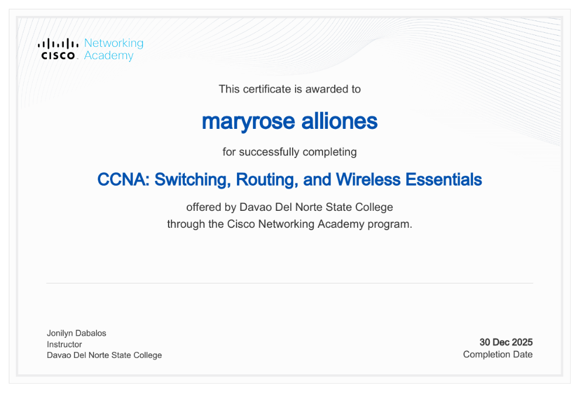

Bachelor of Science in Information Technology
Current year level: 4th year
BSIT · Front-End & UI/UX
BSIT Student · Front-End Developer · UI/UX Designer
I’m a Bachelor of Science in Information Technology student currently in my 4th year. I enjoy building clean, usable, responsive products and turning coursework into meaningful digital experiences.
// 01 — ABOUT
Curious about how thoughtful design and practical code can make everyday tasks easier.
Hi! I’m Mary Rose Alliones, a BSIT student with a passion for front-end development and UI/UX design. I enjoy creating clean, user-friendly, responsive web applications while learning technologies that help turn ideas into useful digital experiences.
Over the past three years, I’ve moved from desktop CRUD systems in Java to web and mobile products. My recent work focuses on interface design and front-end implementation, including a capstone that combines computer vision with real-time web monitoring.
// 02 — EDUCATION
Current year level: 4th year
// 03 — SKILLS & TOOLS
// 04 — SELECTED PROJECTS
Web, mobile, and capstone projects from coursework and startup work.

A localized services platform designed to connect tutors, job seekers, and clients. Developed as a startup project and shown at the DNSC startup competition.
View live project
A mobile app concept for finding work and connecting employers with workers. The project explores job discovery and a straightforward hiring experience.
Explore my GitHub
An online exam proctoring concept that explores how AI could assist with monitoring remote exam sessions.
Open live preview// 05 — ACHIEVEMENTS & CERTIFICATES
Recognition for a startup project and courses completed through Cisco Networking Academy.

Recognition for the TURO application startup project.

12 June 2025

30 December 2025
// 06 — CONTACT
Open to internships, junior front-end roles, and collaborations.